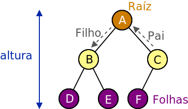
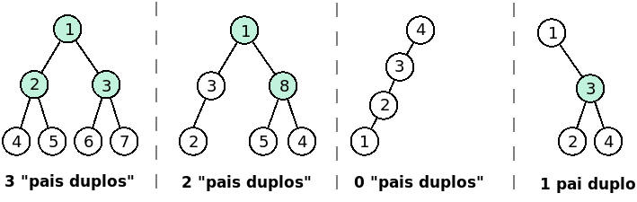
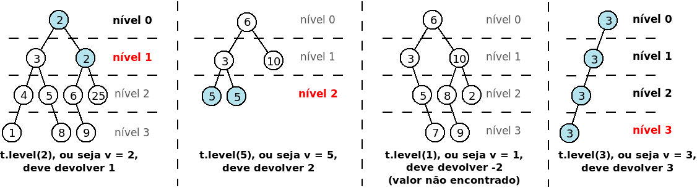

[ED239] Métodos para Árvores Binárias
Neste problema deverá apenas submeter uma classe SinglyLinkedList<T> (e não um programa completo).
[PROBLEMAS PARA DOWNLOAD]
Para precaver uma possível intermitência na ligação de internet, podem e devem fazer download de todos os problemas em:
https://mooshak.dcc.fc.up.pt/~edados/_teste_p2_/NUM_MECANOGRAFICO.zip (onde NUM_MECANOGRAFICO deve ser substituido pelo vosso número mecanográfico)
Código Base
O código base são as classes de árvores binárias dadas nas aulas. Pode fazer download de um único ficheiro zip contendo todos os códigos-fonte (ficheiros .java) necessários. Use como base a classe BTree<T>, que é a única que deverá submeter.
Métodos a Implementar
Deve acrescentar à classe dada os seguintes métodos (não modificando nenhum dos métodos já existentes no código base):
- public int count() (50% da cotação)
Deve devolver a quantidade de "pais duplos", ou seja, nós que têm exatamente dois filhos. Os nós que não têm filhos ou que têm apenas um filho não devem ser contados. A figura seguinte ilustra quatro árvores diferentes e o respectivo número de "pais duplos", indicados a verde.

- public int level(T v) (50% da cotação)
Deve devolver o nível de altura mais alto (mais longe da raíz) onde é possível encontrar um nó com valor v. Se o valor não for encontrado, o método deve devolver -2. A figura seguinte ilustra quatro possíveis árvores t, indicando a azul os nós com o valor v, a negrito os níveis contendo o valor, e a vermelho o nível mais alto onde é possível encontrar um nó com esse valor.

Notas
- Pode submeter código com apenas um dos métodos implementados (para obter pontuação parcial).
- Pode implementar métodos auxiliares, se quiser.
- Para testar na sua máquina deve criar uma árvore. Pode ler uma árvore com número inteiros usando o método readIntTree da classe LibBTree (um exemplo foi dado nas aulas e está disponível na classe TestBTree).
- Em todos os casos de teste as árvores têm tamanho máximo de 100 nós.
Exemplos de Input/Output para o método count
Os exemplos correspondem às quatro árvores da figura.
| Árvore t em preorder |
Valor devolvido por t.count() |
| 1 2 4 N N 5 N N 3 6 N N 7 N N |
3 |
| 1 3 2 N N N 8 5 N N 4 N N |
2 |
| 4 3 2 1 N N N N N |
0 |
| 1 N 3 2 N N 4 N N |
1 |
Exemplos de Input/Output para o método level
Os exemplos correspondem às quatro árvores da figura.
| Árvore t em preorder |
Chamada |
Valor devolvido |
| 2 3 4 1 N N N 5 N 8 N N 2 6 N 9 N N 25 N N |
t.level(2) |
1 |
| 6 3 5 N N 5 N N 10 N N |
t.level(5) |
2 |
| 6 3 N 5 N 7 N N 10 8 N 9 N N 2 N N |
t.level(1) |
-2 |
| 3 3 3 3 N N N N N |
t.level(3) |
3 |
Teste Prático de Estruturas de Dados (CC1007)
8 de Junho de 2020